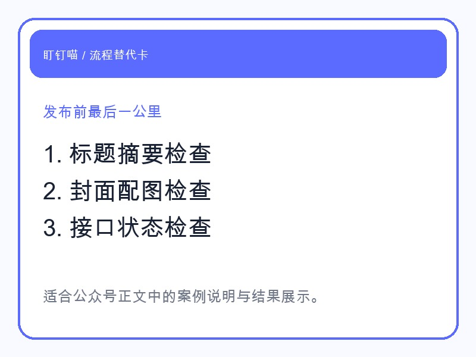
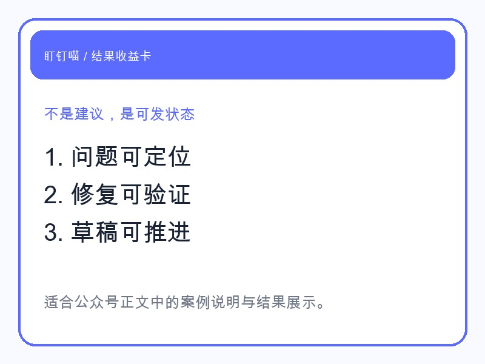

做公众号的人都懂。
一篇稿子写完，并不等于可以发。
标题有没有超长。
摘要有没有写。
封面是不是就绪。
文内图片路径对不对。
转出来的 HTML 有没有问题。
接口、密钥、白名单是不是正常。
这些事每一项都不复杂，但足够把一篇原本已经完成的内容继续拖住。
这次我让龙虾不只是写稿，而是继续往下做一件更像运营管家的事：
把发布前复检整套跑完。
它实际做的动作包括：

这一步的价值，不在于它“会检查”。
而在于它能把那些原本需要你自己逐条确认的问题，先替你排一遍。
龙虾给我的不是一串空泛建议。
而是一个很明确的结果：

这就把运营者最烦的最后一步，变成了一个有结果、有状态的流程。
因为用户不关心你背后有多少提示词。
他们只关心一件事：
这个龙虾到底能不能替我把活干掉。
你把“发布前复检”这个过程展示出来，反而最容易让人理解产品价值。
因为这就是最具体的工作场景。
如果你现在也在做公众号，应该会知道：
真正拖住你的，经常不是写稿，而是最后这堆零碎确认。
龙虾的价值，就是把这些零碎确认变成一套能跑通的工作过程。
你看到的，不再是“一个会说话的 AI”。
而是一个会替你把公众号发出去的龙虾。